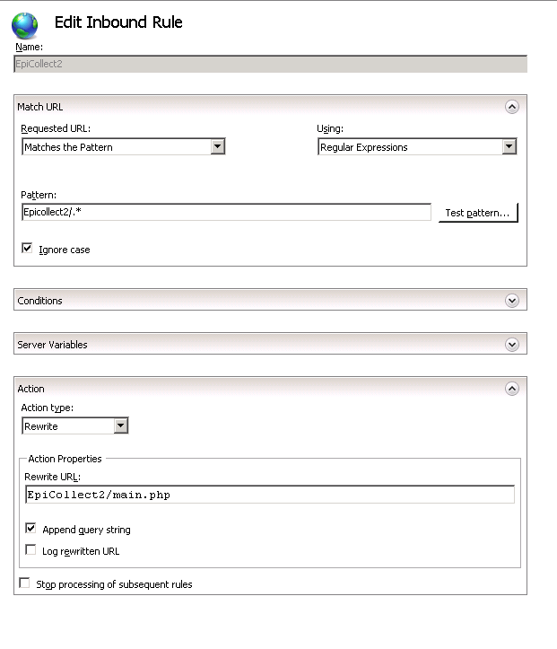

Welcome to EpiCollect+
Setting up EpiCollect+ on Apache
In order to use EpiCollect you need to add a couple of lines to your Apache httpd conf file. At the end of the Directory section relating to the home directory, please add the following if you are deploying epicollect in the root of the website (i.e. http://www.epicollect.net/)
RewriteEngine on
RewriteCond %{REQUEST_URI} !^/(ec\/uploads|images|js|css)
RewriteRule .* main.php
Or if you are deploying EpiCollect in a sub directory of a website (e.g. http://www.example.com/epicollectplus)
RewriteEngine on
RewriteCond %{REQUEST_URI} !^/epicollectplus/(ec\/uploads|images|js|css)
RewriteRule /epicollectplus/.* /epicollectplus/main.php
Setting up EpiCollect+ on IIS 7
To use EpiCollect+ with IIS 7 you will need to install URL rewrite on your IIS server. Then navigate through IIS manager to the website containing your EpiCollect instnace, open the URL Rewrite option, select 'Add rule...' from the right hand side and set up a rule to direct all requests to the root directory of EpiCollect+ to main.php. The below example shows a URL Rewrite for an EpiCollect instance in a directory such as http://www.example.org/EpiCollect2/
Other Web Servers
If you wish to set up EpiCollect+ on a different web server or have any questions please Contact Us